1 计时器debugger反调试 1 2 3 setInterval (function ( debugger }, 500 )
解决方法
1 for (let i = 1 ; i < 99999 ; i++) window .clearInterval(i);
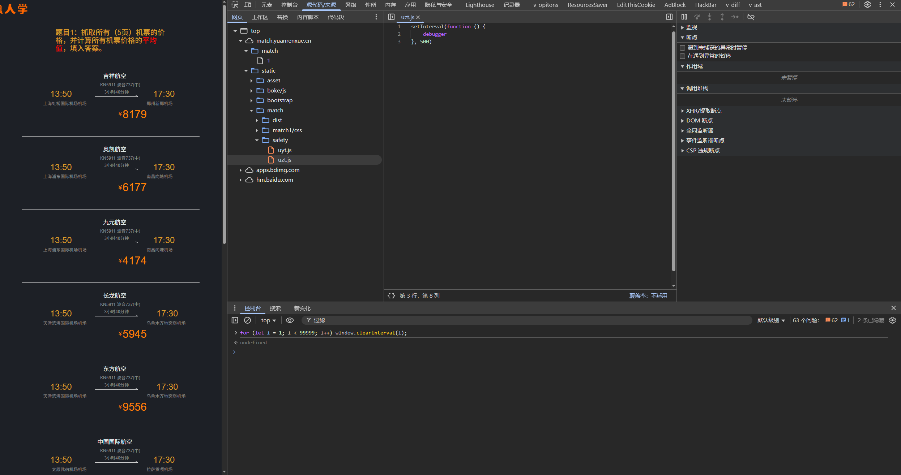
js逆向 通过XHR添加/api/match，进入断点，感觉堆栈信息找到m的生成
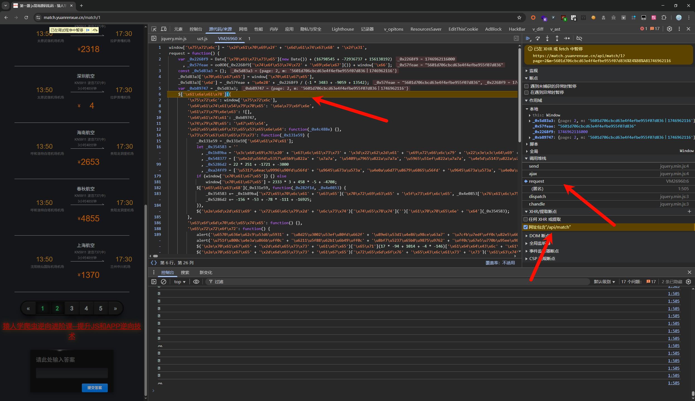
代码混淆了，目前看上去是hex，用上之前学习两天半的ast知识，
1 2 3 4 5 6 7 8 9 10 11 12 13 14 15 16 17 18 19 20 21 22 23 24 25 26 27 28 29 30 31 32 33 34 35 36 37 38 39 40 41 42 43 44 45 46 47 48 const parser = require ("@babel/parser" );const generate = require ("@babel/generator" ).defaultconst traverse = require ("@babel/traverse" ).defaultconst types = require ("@babel/types" )const fs = require ("fs" );const code = fs.readFileSync("./request.js" , "utf-8" )const ast = parser.parse(code)const visitor1 = { StringLiteral (path ) delete path.node.extra.raw } } traverse(ast, visitor1) const result = generate(ast)console .log(result.code)fs.writeFileSync("output1.js" , result.code, "utf-8" ); const visitor2 = { "BinaryExpression|CallExpression|ConditionalExpression" (path) { const {confident, value} = path.evaluate() if (confident){ path.replaceInline(types.valueToNode(value)) } } } traverse(ast,visitor2) const result2 = generate(ast)console .log(result2.code)fs.writeFileSync("output2.js" , result2.code, "utf-8" ); const decodedContent = result2.code.replace(/\\u([\dA-Fa-f]{4})/g , (match, group ) => { return String .fromCharCode(parseInt (group, 16 )); }); fs.writeFileSync("output3.js" , decodedContent, "utf-8" );
一顿操作下来后，代码已经能看了
从代码中可以知道，m的定义为
1 2 3 4 var _0x2268f9 = Date ["parse" ](new Date ()) + 100000000 , _0x57feae = oo0O0(_0x2268f9["toString" ]()) + window ["f" ]; const _0x5d83a3 = {}; _0x5d83a3["page" ] = window ["page" ], _0x5d83a3["m" ] = _0x57feae + "丨" + _0x2268f9 / 1000 ;
关键点在oo0O0函数中，打个断点，跟踪一下，在1中，后面就不用管了，接jsrpc调用一下就结束了
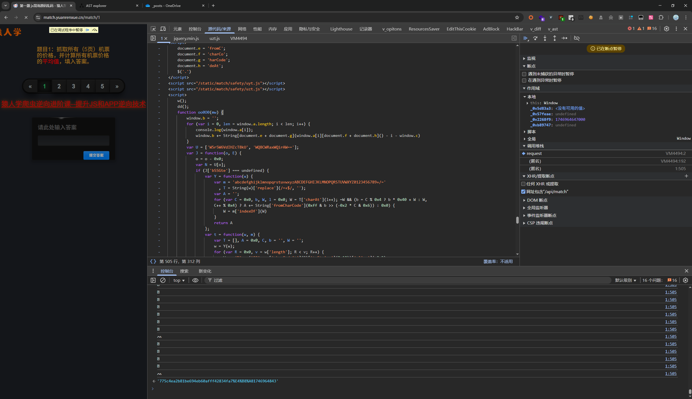
逃课脚本 1 2 3 4 5 6 7 8 9 10 11 12 13 14 15 16 17 18 19 20 import requestsdef get_info (page ): url = f'https://match.yuanrenxue.cn/api/match/1?page={page} &m=71c000bf3e2745fc1cf280515e9283e9%E4%B8%A81746883369' headers = { "Cookie" :"Hm_…………db=1746781667" , } resp = requests.get(url, headers=headers) print (resp.json()) return resp.json()['data' ] all = 0 for i in range (1 , 6 ): data = get_info(i) for j in data: all += j['value' ] print (all /50 )
burp抓个包，找一个新一点的m替换进来就行了
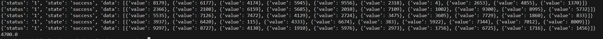
2 无限debugger反调试 1 2 3 4 (function anonymous ( debugger })
解决方法
1 2 3 4 5 6 7 8 9 10 Function .prototype.__constructor_back = Function .prototype.constructor;Function .prototype.constructor = function ( if (arguments && typeof arguments [0 ]==='string' ){ if (arguments [0 ].indexOf("debugger" )!=-1 ){ return function ( } } return Function .prototype.__constructor_back.apply(this ,arguments ); }
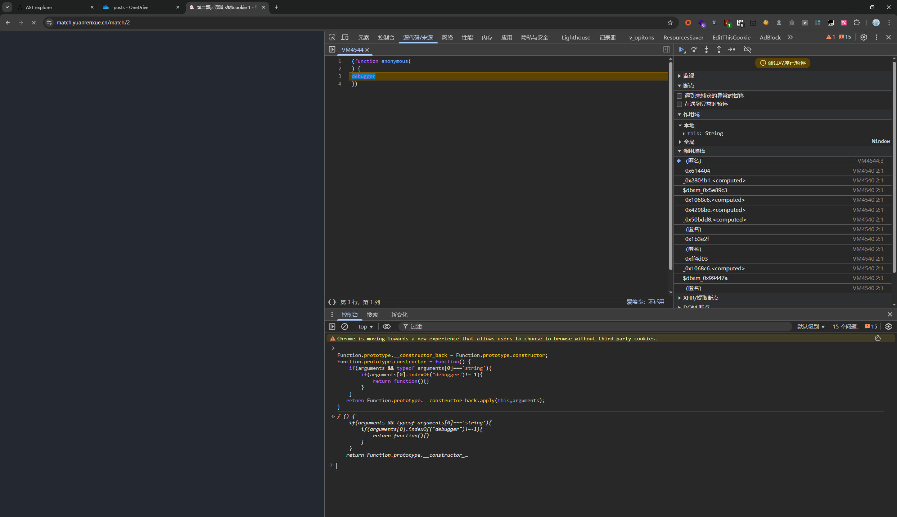
js逆向 逃课脚本 1 2 3 4 5 6 7 8 9 10 11 12 13 14 15 16 17 18 19 20 import requestsdef get_info (page ): url = f'https://match.yuanrenxue.cn/api/match/2?page={page} ' headers = { "Cookie" :"Hm_…………db=1746781667" , } resp = requests.get(url, headers=headers) print (resp.json()) return resp.json()['data' ] all = 0 for i in range (1 , 6 ): data = get_info(i) for j in data: all += j['value' ] print (all )
burp抓个包，找一个新一点的cookie替换进来就行了
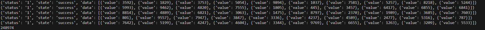
3 不需要你想，只需要分析一下请求数据包即可，每一个page数据请求前，都有一个jssm请求，用python模拟一下就好了
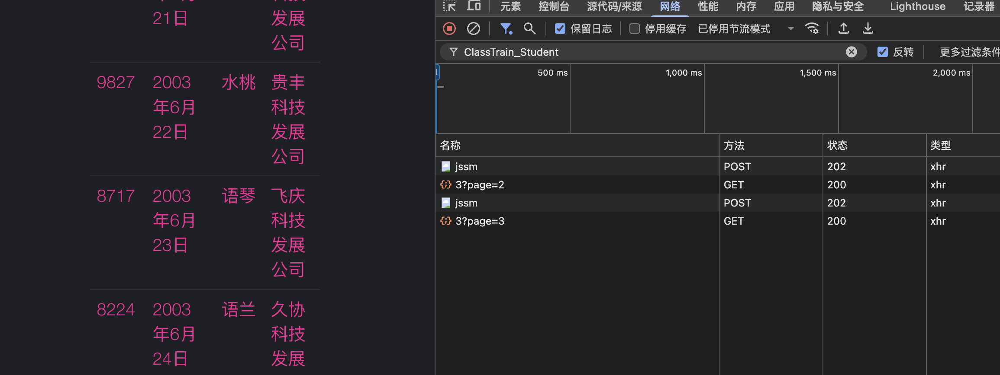
1 2 3 4 5 6 7 8 9 10 11 12 13 14 15 16 17 18 19 20 21 22 23 24 25 26 27 28 29 30 31 32 33 34 35 36 37 import requestsimport jsonimport collectionssession = requests.Session() session.headers = { 'Content-Length' : '0' , 'Accept' : '*/*' , 'Referer' : 'https://match.yuanrenxue.cn/match/3' , 'Accept-Encoding' : 'gzip, deflate, br' , 'Accept-Language' : 'en-US,en;q=0.9,zh-CN;q=0.8,zh;q=0.7' , 'Cookie' : "sessionid=pw3524k………………ej3; expires=Wed, 28 Feb 2024 20:15:46 GMT; Max-Age=21600; Path=/; SameSite=Lax" } page = 1 url1 = "https://match.yuanrenxue.cn/jssm" url2 = f"https://match.yuanrenxue.cn/api/match/3?page={page} " all = []for i in range (1 ,6 ): jssm = session.post(url1) print (jssm.status_code) match = session.get(url2) print (match.status_code, match.headers) result = [] for i in match.json()['data' ]: result.append(i['value' ]) print (result) all += result counter = collections.Counter(all ) most_common = counter.most_common(1 )[0 ] print ("出现频率最高的申请号：" , most_common)
5 逆向 打开，下xhr断点，找到相关代码，发现提示content unavailable. Resource was not cached
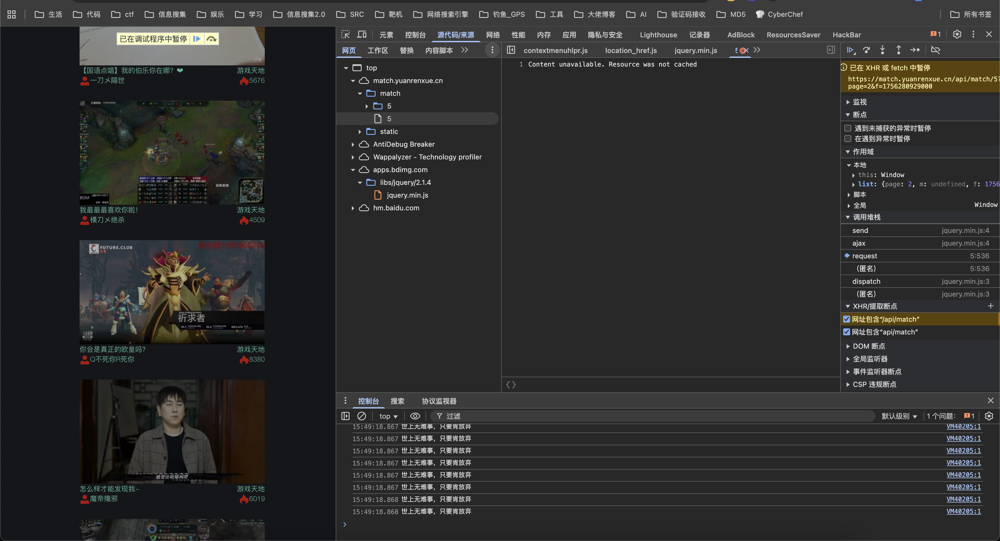
结果对比，数据包有时效性，可能有关的参数为uri中的m和f，cookie中的m和RM4hZBv0dDon443M
然后就要带着这几个参数准备逆向js了，
既然5的request不给我看，就把断点打到dispatch中，然后手动进去
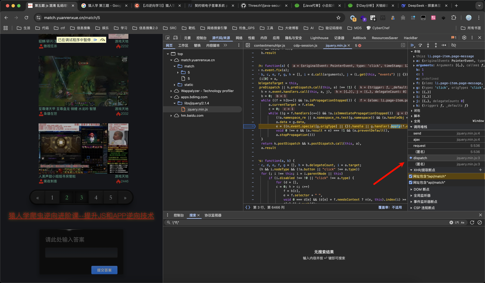
在这里进入下一个函数，然后就到5里面了
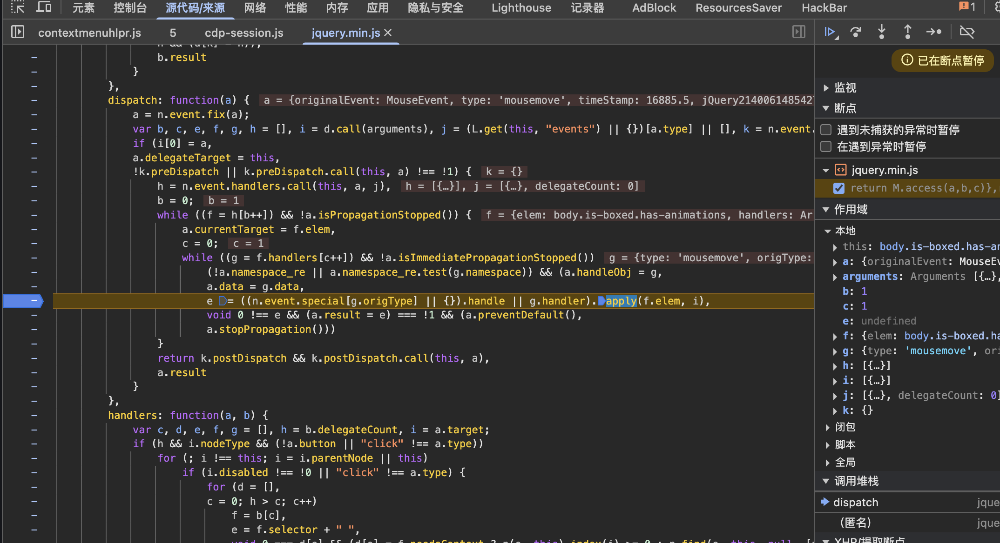
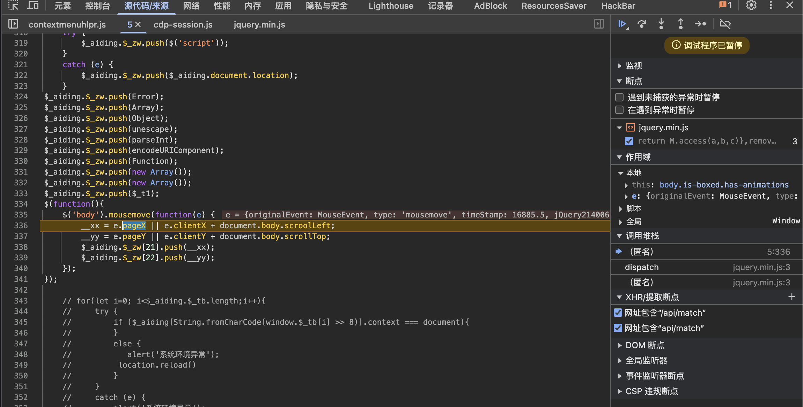
通过搜索，在这里的最后一行发现关键信息，下断点，然后忘回找定义和赋值
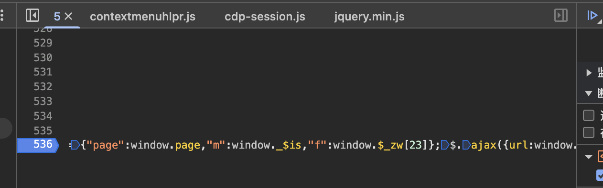
_$is 没找到有用的东西，但是$_zw有，
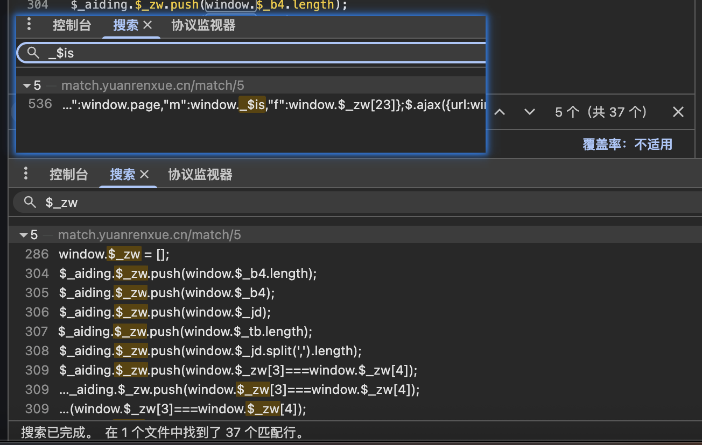
跟踪这个变量走，需要的f是第24个元素，可以知道是这个$_t1
于是继续跟$_t1,tmd就是一个时间戳
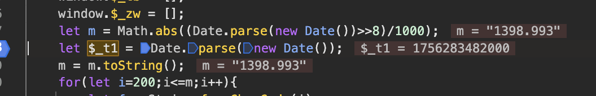
解决这个后，需要解决其他的参数，在控制台中，一直在输出’世上无难事，只要肯放弃’。点击进入了混淆后的文件中，
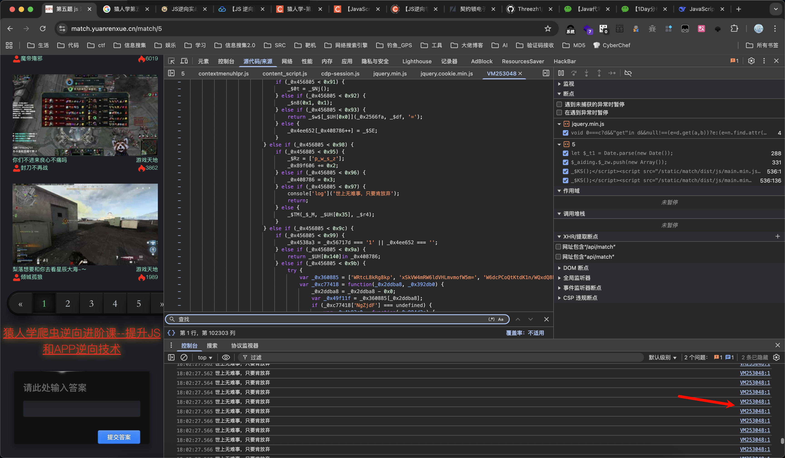
在这里再搜一下关键字信息
RM4hZBv0dDon443M
m
f
Cookie
一番搜索下来只有一个m=有结果
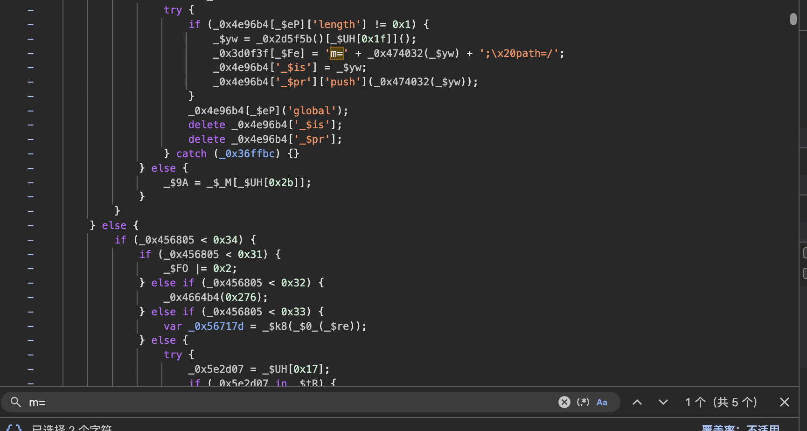
把几个m=打上断点后，刷新页面，确定就是此处，然后就可以判断，前面的 _0x3d0f3f[_$Fe]应该是操作cookie之类的东西，顺着或许就可以找到RM4hZBv0dDon443M参数的定义
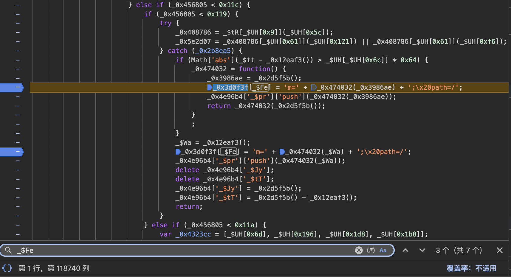
果不其然，之前一直搜不到RM4hZBv0dDon443M是因为字符串被分解了
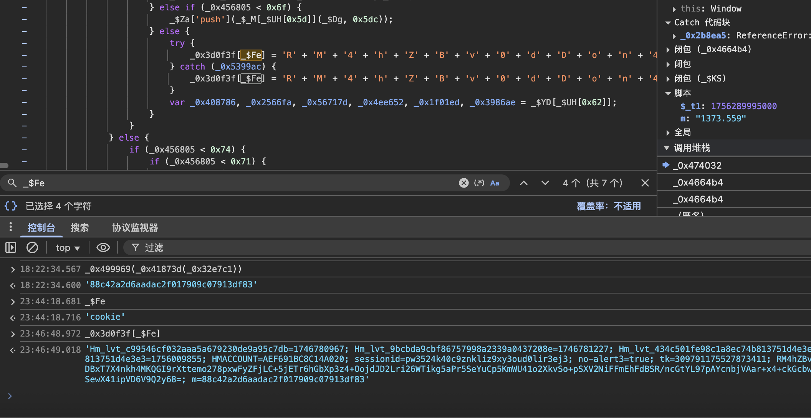
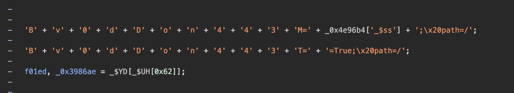
于是cookie中的两个字段就都找到了，
m= _0x474032(_$Wa)
RM4hZBv0dDon443M=_0x4e96b4['_$ss']
先看m，入参只有一个_$Wa，这个参数的生成，简单跟了一下，就是一个时间戳
1 2 3 4 5 6 7 8 9 _$Wa = _0x12eaf3(); ………… _0x35bb1d = Date ………… function _0x12eaf3 ( return _0x35bb1d[_$UH[0xff ]](new _0x35bb1d()); }
然后是RM4hZBv0dDon443M，_0x4e96b4在调试时发现，就是window变量，_0x4e96b4['_$ss']就是window._$ss
所以需要去追window是什么时候添加_$ss的，直接搜索搜不到，估计和上面一样，所以决定去搜，然后一个一个看，最后发现这个地方有些可疑，跟了一下，果然
1 _0x4e96b4['_$' + _$UH[0x348 ][0x1 ] + _$UH[0x353 ][0x1 ]] = _0x29dd83[_$UH[0x1f ]]();
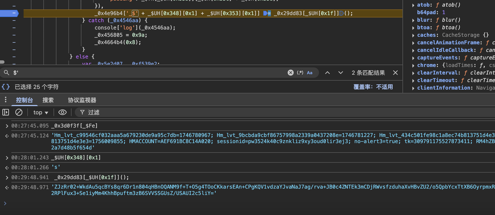
随后跟一下这段内容
1 2 3 4 5 6 7 _$Ww = _$Tk[_$UH[0x2db ]][_$UH[0x2dc ]][_$UH[0xff ]](_0x4e96b4['_$pr' ][_$UH[0x1f ]]()), _0x29dd83 = _$Tk['A' + _$UH[0x32d ]][_$UH[0x337 ] + _$UH[0x336 ]](_$Ww, _0x4e96b4[_0xc77418('0x6' , 'OCbs' )], { 'mode' : _$Tk[_$UH[0x339 ] + _$UH[0x33a ]][_$UH[0x2e5 ]], 'padding' : _$Tk[_$UH[0x33b ]][_$UH[0x33c ] + _$UH[0x33d ]] }),
干扰 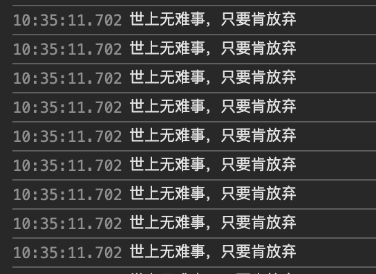
在调试的时候，一直有输出干扰信息，定位一下发现是计时器
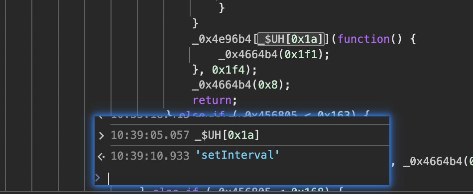
1 for (let i = 1 ; i < 99999 ; i++) window .clearInterval(i);
用ast还原混淆代码 框架-16进制-字符串拼接 还原的框架代码
1 2 3 4 5 6 7 8 9 10 11 12 13 14 15 16 17 18 19 20 21 22 23 24 25 26 27 28 29 30 31 32 33 34 35 36 37 38 39 40 41 42 43 44 45 46 47 48 49 50 51 52 53 54 55 56 57 58 59 60 61 62 63 64 65 66 67 68 69 70 71 72 const file = require ('fs' )const parser = require ('@babel/parser' )const traverse = require ('@babel/traverse' ).defaultconst types = require ('@babel/types' )const template = require ('@babel/template' ).defaultconst generator = require ('@babel/generator' ).defaultencodeFile = './ob-5.js' let sourceCode = file.readFileSync(encodeFile, {encoding : 'utf-8' })let ast = parser.parse(sourceCode)const hextostring = { StringLiteral (path ) delete path.node.extra.raw delete path.node.extra.raw } }; const str_process = { BinaryExpression (path ) function getString (node ) if (types.isBinaryExpression(node) && node.operator === '+' ) { const left = getString(node.left); const right = getString(node.right); if (typeof left === 'string' && typeof right === 'string' ) { return left + right; } } else if (types.isStringLiteral(node)) { return node.value; } return undefined ; } const result = getString(path.node); if (typeof result === 'string' ) { path.replaceWith(types.StringLiteral(result)); } } } const hextoint = { NumericLiteral (path ) delete path.node.extra } } traverse(ast, hextostring); traverse(ast, hextoint); traverse(ast, str_process); let {code} = generator(ast, opts = {jsescOption : {minimal : true }})console .log("处理完毕，耗时" )decodeFile = './ob-5-ourput.js' file.writeFile(decodeFile, code, (err ) => { })
只需要按需求编写visitor，通过traverse修改代码即可，这里目前还原了一些比较容易处理的，
还原效果和对比如下,
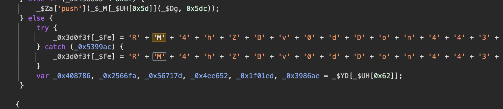
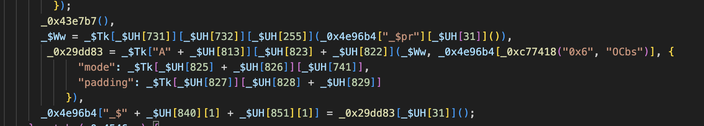
替换_$UH 然后是替换掉_$UH，_$UH长度为853，首先需要找到_$UH的定义，向上翻，
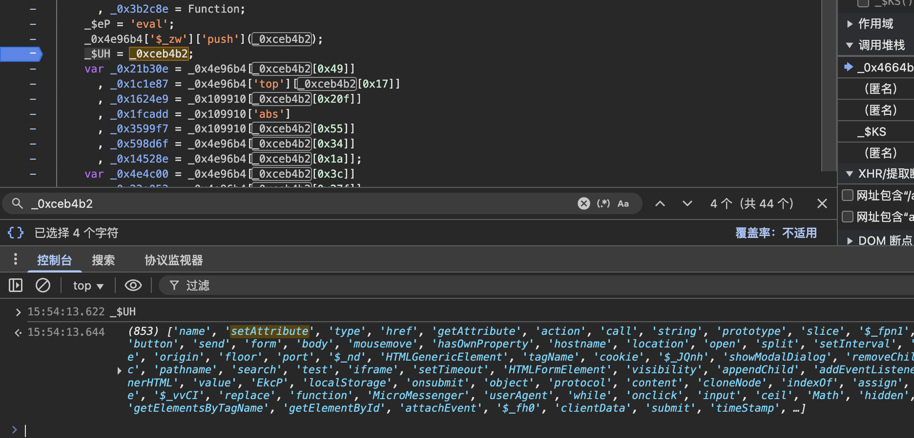
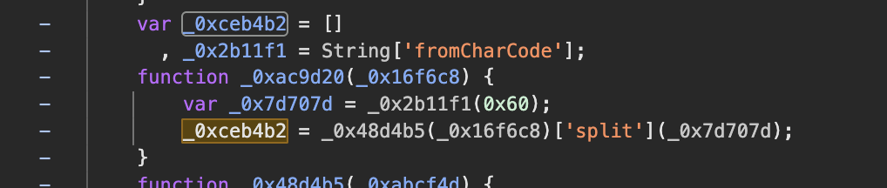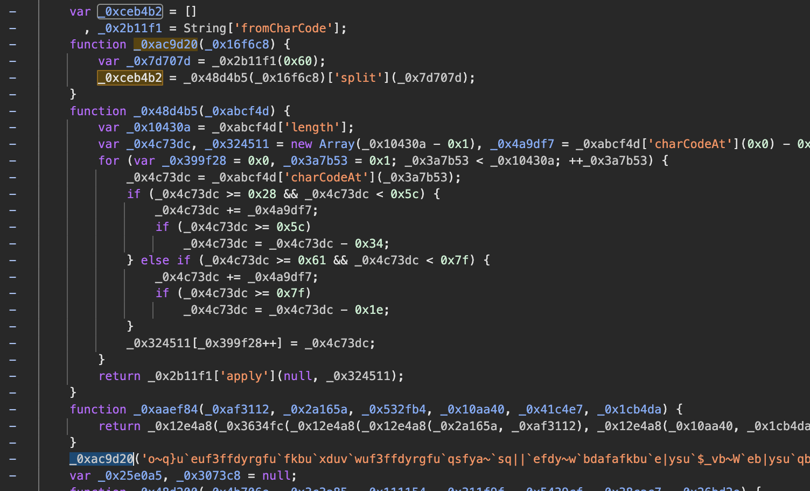
将这里相关的代码全部扒下来，(从_$UH = _0xceb4b2;这一行往上)，然后解决一点小bug
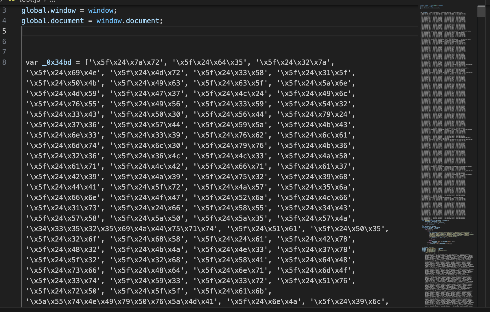
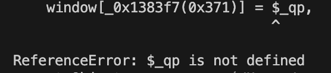
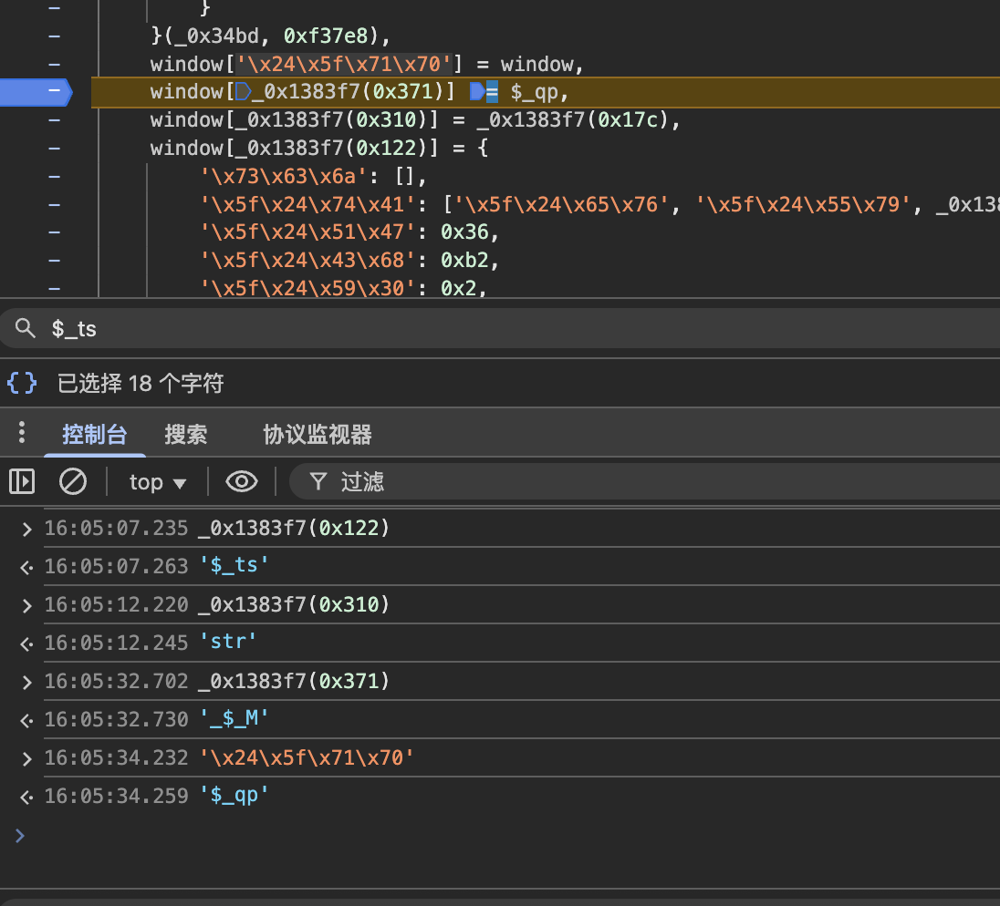
整理后，加上console.log看一下，发现只有725个
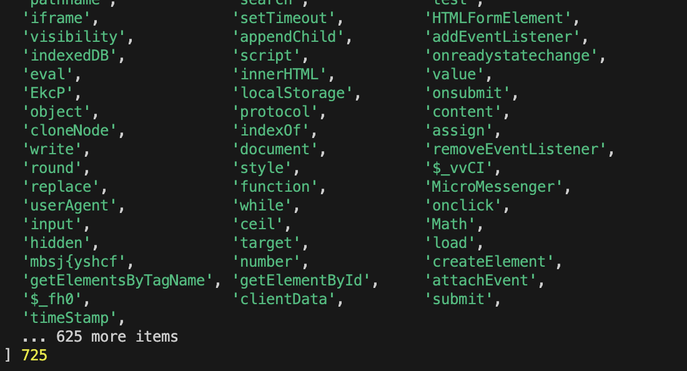
害得看一下是哪里多了，搜索，_$UH，有关push的地方,发现12处，前面11处都是push了字符串，后面的$_qp实际上就是window，
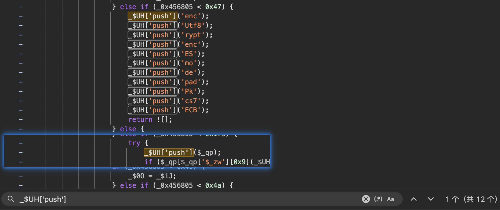
打上断点观察一下，发现是先循环push了6个$_qp进去,不过这里不能直接丢$_qp，要给他改成window不然后面ast替换的时候会报错·，然后循环push上面的11个字符串,在中间775的位置有加了一个$_qp。所以手动添加一下。
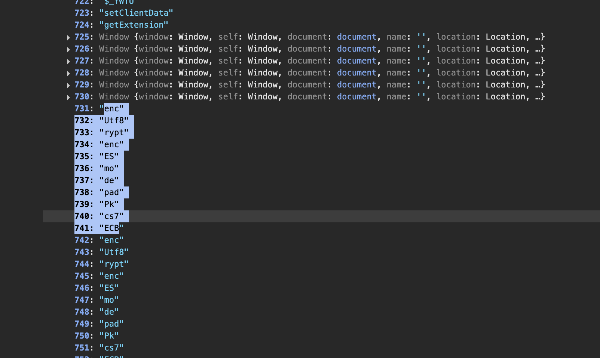
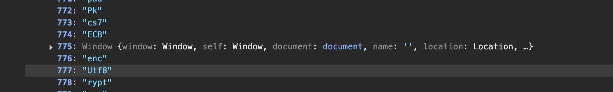
在确保$_qp无误后，把它加入到ast脚本中，然后使用下面两个visitor，因为存在一些_$UH[840][1]和_$UH[827]两种情况，所以用了两个visitor
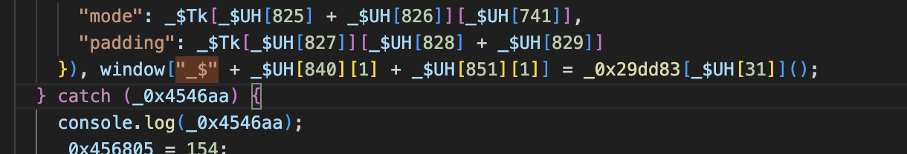
1 2 3 4 5 6 7 8 9 10 11 12 13 14 15 16 17 18 19 20 21 22 23 24 25 26 27 28 29 30 31 32 33 34 35 36 37 38 39 40 const change_UH_1 = { MemberExpression (path ) if ( types.isMemberExpression(path.node.object) && types.isIdentifier(path.node.object.object, { name : "_$UH" }) && types.isNumericLiteral(path.node.object.property) && types.isNumericLiteral(path.node.property) ) { const arrIdx = path.node.object.property.value; const strIdx = path.node.property.value; const arrVal = _$UH[arrIdx]; if (typeof arrVal === "string" && arrVal.length > strIdx) { path.replaceWith(types.stringLiteral(arrVal[strIdx])); } } } } const change_UH_2 = { MemberExpression (path ) if ( types.isIdentifier(path.node.object, { name : "_$UH" }) && types.isNumericLiteral(path.node.property) ) { const idx = path.node.property.value; const value = _$UH[idx]; console .log(idx, value); if (typeof value !== "undefined" ) { path.replaceWith(types.valueToNode(value)); } } } }
最后的效果大致如下：
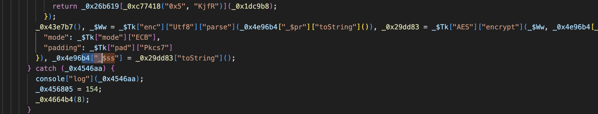
替换字符串 在这个混淆js中经常可以看到_0x4e96b4这个东西，其实就是window，所以要给他换掉，增加js的可读性
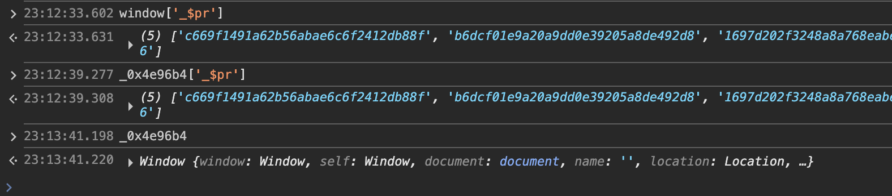
首先找到定义处，还发现一堆其他的，顺手一起处理了
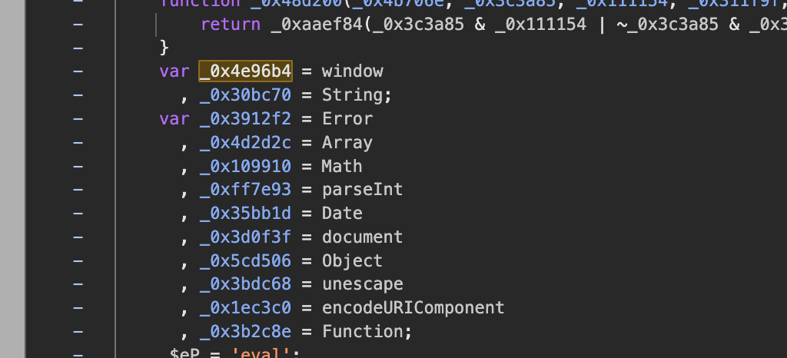
代码如下：
1 2 3 4 5 6 7 8 9 10 11 12 13 14 15 16 17 18 19 20 21 22 23 24 25 26 27 28 29 30 31 32 33 34 35 36 37 38 39 40 41 42 43 44 45 46 47 48 49 50 51 52 53 54 55 56 const mapping = { "_0x4e96b4" : "window" , "_0x30bc70" : "String" , "_0x4d2d2c" : "Array" , "_0x109910" : "Math" , "_0x35bb1d" : "Date" , "_0x3d0f3f" : "document" , "_0x5cd506" : "Object" , "_0x3b2c8e" : "Function" , "_$Tk" :"CryptoJS" }; function replaceRootObject (memberExpr ) if ( types.isMemberExpression(memberExpr.object) ) { memberExpr.object = replaceRootObject(memberExpr.object); return memberExpr; } if ( types.isIdentifier(memberExpr.object) && mapping[memberExpr.object.name] ) { memberExpr.object = types.identifier(mapping[memberExpr.object.name]); return memberExpr; } return memberExpr; } const chang_varia = { MemberExpression (path ) if ( types.isIdentifier(path.node.object) && mapping[path.node.object.name] ) { path.node.object = types.identifier(mapping[path.node.object.name]); } else if (types.isMemberExpression(path.node.object)) { replaceRootObject(path.node); } if (types.isStringLiteral(path.node.property)) { path.node.property = types.identifier(path.node.property.value); path.node.computed = false ; } } }
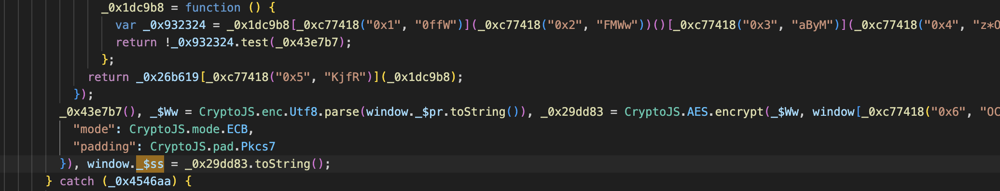
脚本 ast没办法完整还原出来，只能辅助看代码，又不想扣代码，rpc好像也有点麻烦，最后决定用cdp远程调用
uri中的m是时间戳，f是另一个时间戳，直接用代码实现
1 2 3 4 5 6 7 8 def Get_uri_m (): import time return str (int (time.time()*1000 )) def Get_uri_f (): import time return str (int (time.time()))+"000"
cookie中的m和RM4hZBv0dDon443M就需要用到调用
允许CDP调用的浏览器
1 "/Applications/Google Chrome.app/Contents/MacOS/Google Chrome" --remote-debugging-port=9222 --user-data-dir="~/tmp/tmpchrome" --remote-allow-origins=http://127.0.0.1:9222 --ignore-certificate-errors
获取callFrameId和发送CDP请求，发送请求前先运行get_callFrameId()获取callFrameId。
1 2 3 4 5 6 7 8 9 10 11 12 13 14 15 16 17 18 19 20 21 22 23 24 25 26 27 28 29 30 31 32 33 34 35 36 37 38 39 40 41 42 43 44 45 46 47 48 49 50 51 52 53 54 55 56 57 58 59 60 61 62 63 64 65 66 67 68 69 70 71 72 73 def get_callFrameId (): ws_res = requests.get(url = "http://127.0.0.1:9222/json" ) ws_res_json = json.loads(ws_res.content) for i in ws_res_json: if target in i['url' ]: ws_url = i['webSocketDebuggerUrl' ] break ws_res = requests.get(url = "http://127.0.0.1:9222/json" ) ws_res_json = json.loads(ws_res.content) conn = websocket.create_connection(ws_url,header={"User-Agent" : "this_is_y" }) conn.send(json.dumps({"id" : 1 , "method" : "Debugger.enable" })) conn.recv() conn.send(json.dumps({ "id" : 2 , "method" : "Debugger.setBreakpointByUrl" , "params" : { "lineNumber" : 123 , "url" : "https://your-url.js" } })) conn.recv() global callFrameId while True : msg = json.loads(conn.recv()) if msg.get("method" ) == "Debugger.paused" : callFrameId = msg["params" ]["callFrames" ][0 ]["callFrameId" ] break return callFrameId def send_CDP (js_code ): ws_res = requests.get(url = "http://127.0.0.1:9222/json" ) ws_res_json = json.loads(ws_res.content) for i in ws_res_json: if target in i['url' ]: ws_url = i['webSocketDebuggerUrl' ] break conn = websocket.create_connection(ws_url,header={"User-Agent" : "this_is_y" }) request_id = int (random.random()*10000 ) method = "Debugger.evaluateOnCallFrame" param = {"callFrameId" :callFrameId, "expression" :js_code, "generatePreview" :True , "includeCommandLineAPI" :True , "silent" :False , "returnByValue" :True } command = {'method' : method, 'id' : request_id, 'params' : param} request_id+=1 logging.debug("sendCDP-payload>>> " +str (command)+"\n" ) conn.send(json.dumps(command)) result = json.loads(conn.recv()) conn.close() logging.debug("sendCDP-result>>>> " +str (result)+"\n" ) return result
浏览器访问目标网站https://match.yuanrenxue.cn/match/5，断点打在` _0x3d0f3f[_$Fe] = ‘m=’ + _0x474032(_$yw) + ‘;\x20path=/‘;`，且保持断点状态
调用_0x474032函数加密时间戳，获取cookie中的m
1 2 3 4 def _0x474032 (_0x5e8f2c ): js = "_0x474032('" +_0x5e8f2c+"')" res = send_CDP(js) return res['result' ]['result' ]['value' ]
cookie中的RM4hZBv0dDon443M
从ast还原后的一部分代码来看，RM4hZBv0dDon443M是用window._pr做明文，window._$qF通过AES(ECB,Pkcs7)加密得来的
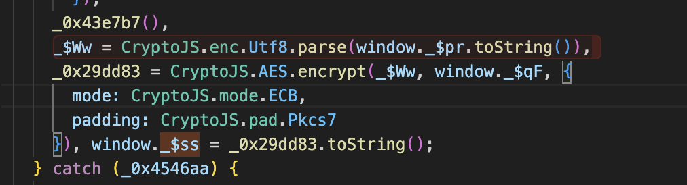
所以需要看一下window._pr和window._$qF分别是什么
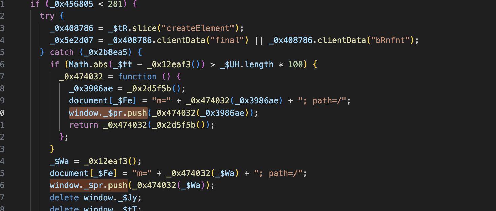
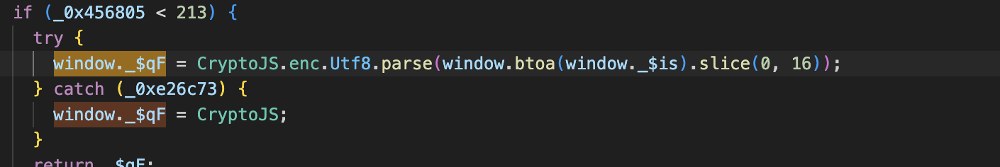
可以看到window._pr是前面加进去的cookie中的m
``window._$qF`是前面m处理前的时间戳，通过base64编码后，去16位的长度
所以稍加处理一下，代码如下
1 2 3 4 5 6 7 8 9 10 11 12 13 14 15 16 17 18 def Get_cookie_rm (uri_m ): """ data: 明文（bytes 或 str） key: 密钥（16/24/32字节，bytes 或 str） 返回: 密文（bytes） """ data = Get_cookie_m(Get_uri_f())+"," +Get_cookie_m(Get_uri_f())+"," +Get_cookie_m(Get_uri_f())+"," +Get_cookie_m(Get_uri_f())+"," +Get_cookie_m(uri_m) key = b64encode(uri_m.encode()).decode()[:16 ] print (data,key) if isinstance (data, str ): data = data.encode() if isinstance (key, str ): key = key.encode() cipher = AES.new(key, AES.MODE_ECB) padded_data = pad(data, AES.block_size) encrypted = cipher.encrypt(padded_data) return b64encode(encrypted).decode()
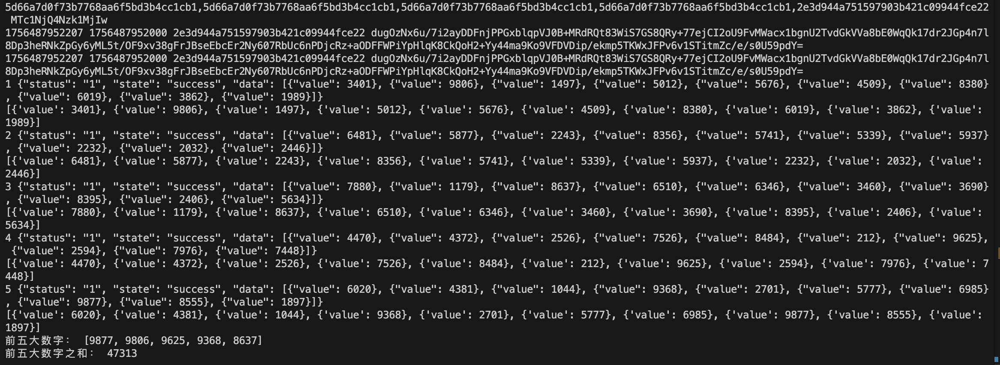
逃课脚本 在刷新页面后，迅速将数据包拿出来，丢到代码中，趁还热乎，把数据都请求出来
1 2 3 4 5 6 7 8 9 10 11 12 13 14 15 16 17 18 19 20 21 22 23 24 25 26 27 28 29 30 31 32 33 34 35 36 37 38 39 40 41 42 43 44 45 46 47 48 49 import jsonimport collectionsimport requestsimport reinfo = """ GET /api/match/5?page=3&m=1756400067885&f=1756400067000 HTTP/2 Host: match.yuanrenxue.cn Cookie: XXXXXXXX Sec-Ch-Ua-Platform: "macOS" """ info1 = re.findall(r"&m=(\d+)&f=(\d+)" , info)[0 ] info2 = re.findall(r"m=(\w+); RM4hZBv0dDon443M=(.{236})" , info)[0 ] print (info1,info2)print (info1,info2[1 ])session = requests.Session() session.headers = { 'Accept-Language' : 'zh-CN,zh;q=0.9,en;q=0.8' , 'Priority' : 'u=0, i=1' , 'Cookie' : f"Hm_lvt_c99546cf032aaa5a679230de9a95c7db=XXXXXXXX; Hm_lvt_9bcbda9cbf86757998a2339a0437208e=XXXXXXXX; Hm_lvt_434c501fe98c1a8ec74b813751d4e3e3=XXXXXXXX; Hm_lpvt_434c501fe98c1a8ec74b813751d4e3e3=XXXXXXXX; HMACCOUNT=XXXXXXXX; sessionid=XXXXXXXX; no-alert3=true; tk=309791175527873411; m={info2[0 ]} ; RM4hZBv0dDon443M={info2[1 ]} " , } coll = [] for i in range (1 , 6 ): url = f"https://match.yuanrenxue.cn/api/match/5?page={i} &m={info1[0 ]} &f={info1[1 ]} " resp = session.get(url) print (i,resp.text) items = resp.json()['data' ] print (items) t = [x['value' ] for x in items] coll += t top5 = sorted (coll, reverse=True )[:5 ] top5_sum = sum (top5) print ("前五大数字：" , top5)print ("前五大数字之和：" , top5_sum)